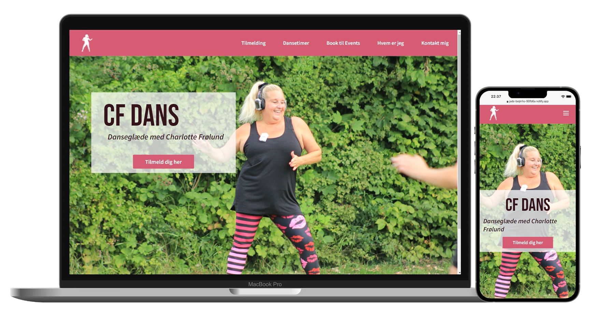

Mockup
Introduction
Tech stack: HTML, JavaScript, Vite & Sass
I started this project because a friend of mine recommended me to the owner of CF Dans, Charlotte Frølund. She needed someone to set up a website so she could attract more participants/customers to her dance classes. She was active on some social media but had no other way of communicating to customers and therefore asked me to help her build a website with more information about her and the dance classes. To make the website I used the package manager npm, the tool Vite and the CSS preprocessor SASS.
Visual design
Charlotte Frølund and I set up a meeting and I quickly found out that though she had plenty of dancing experience and had been dancing and teaching for many years she only recently decided to go independent. This meant that I design wise had a lot of choices to make since there was no established visual identity. I did some research within the industry and Charlotte Frølund had also provided me with names of some of her competitors. After the research I presented moodboards, colors, fonts, etc. to her to make sure we were on the same page. Before I started coding the website I presented a mockup to the client and made additional adjustments according to her feedback.
Process
Since I had just recently learned about npm I decided to take on a challenge and code the website using that. I had the most experience with the opinionated tool Vite so that is what I used. Though I knew using Vite would have a bunch of benefits like minifying my files I also used it because it can "convert Sass”' and I knew I wanted to use Sass. I used Sass to structure my stylesheets since the site would have a lot of pages and that meant a lot of styling. So in case Charlotte Frølund ever wanted to hand over her website to another multimedia designer or if I ever wanted to go back to it later, navigating the styling would not be an impossible task.